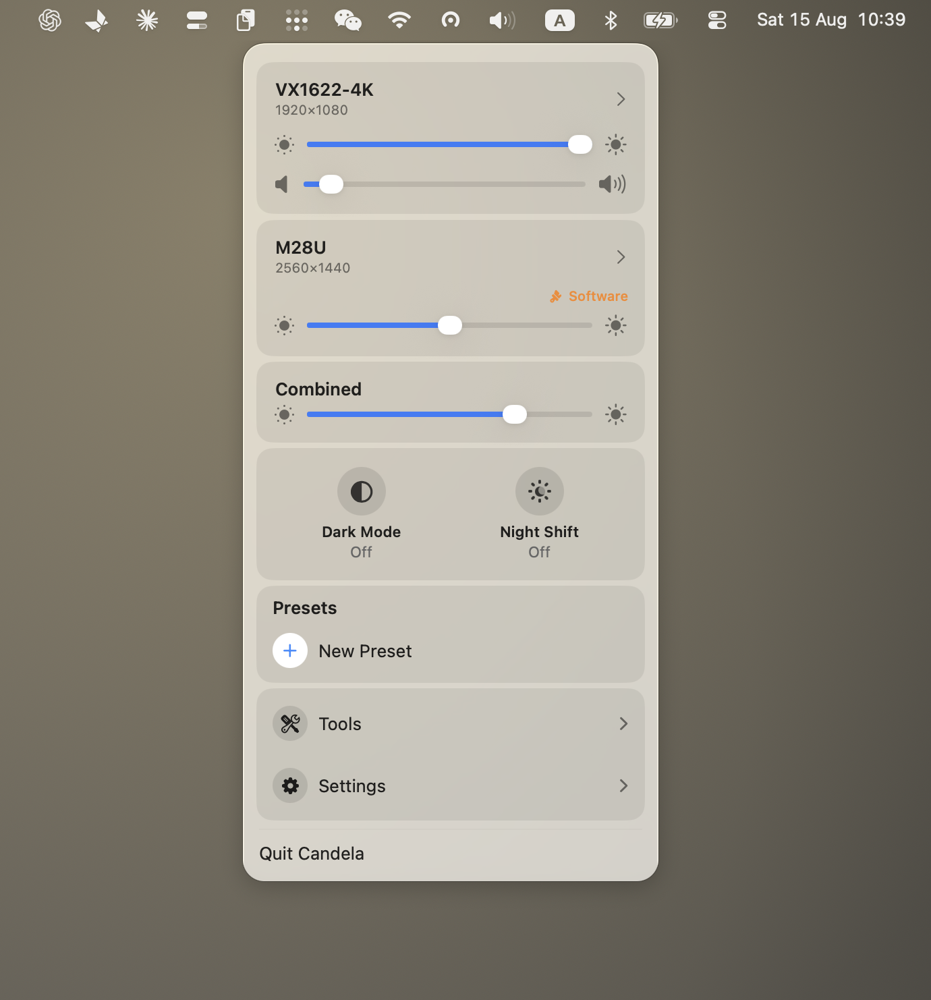

macOS 藏起来的显示器设置，都在这一个面板里
外接显示器在 Mac 上被砍掉的那些控制——真正的 DDC 硬件亮度、清晰的 HiDPI 缩放、 能作用于任意屏幕的亮度快捷键、预设、虚拟显示器——Candela 全部补回来。
macOS 26 · Apple 芯片 · MIT 许可 · 没有 Pro 版，不需要激活码

macOS 没给你的三件事
把显示器插到 Mac 上，有三件事立刻不像内置屏那样正常了：亮度键按下去毫无反应； 分辨率列表只给几个发虚的选项，把清晰的那些藏了起来；想把整张桌子调暗， 只能一块屏一块屏地拖滑条。
Candela 把这三件事补回来，而且做成一个像控制中心那样的面板，不是一个设置窗口。
调的是背光，不是画面
走视频线上的 DDC/CI，和显示器自己的按键是同一条通道。遇到拒绝 DDC 的屏幕会退回软件调光，并在面板上明确标出来。
亮度键作用于任意屏幕
F1／F2 可以跟随鼠标所在屏幕、作用于全部屏幕、把所有屏幕当成一块调，或者只调你指定的那几块。
任意显示器都能上 HiDPI
把 macOS 对第三方显示器隐藏的清晰缩放档位放出来，包括 1440p 与 4K 面板本来就能做到的那些。
让多块屏真的看起来一样
一条滑条管住整张桌子，再给每块屏校一个下限——不会出现一块还亮着、另一块已经全黑。
预设
把整套配置——分辨率、亮度、排列——存下来，一键恢复。
虚拟显示器与 Sidecar
建一块虚拟屏用于录制或远程，把 iPad 接成扩展屏，都不用打开系统设置。
免费就是免费
没有 Pro 版，没有激活码，没有每日次数上限，也没有留一手的功能。整个 app 以 MIT 开源， 代码在 GitHub 上。觉得有用的话 Ko-fi 在那儿；你永远不点，app 也不会有任何变化。
这也是和同类工具最主要的区别。BetterDisplay 的免费版相当能打，但把灵活 HiDPI 缩放、 虚拟屏、断开显示器、高级快捷键留给了 21.99 美元的 Pro。Lunar 同样开源， 终身授权 23 美元，免费版限制为每天 100 次亮度调节。两个都是好软件。 Candela 对「我能用到哪些功能」的回答就一个字：全部。
指南
- 外接显示器发虚怎么修 —— 1440p / 4K 上字为什么糊，真正管用的是哪几步
- Mac 如何开启 HiDPI —— HiDPI 到底是什么，以及怎么给 macOS 不肯给的显示器打开它
- 让亮度键能控制外接显示器 —— F1／F2 作用于任意屏幕，以及那一个必需的权限
- 多块显示器亮度同步 —— 一条滑条管全部，以及怎么让不同面板真的看起来一致
安装
下载 DMG 拖进「应用程序」，或者用 Homebrew：
brew install --cask iamzifei/tap/candela
Candela 使用 Developer ID 签名并经过 Apple 公证，打开时不会有「无法验证开发者」的拦截。
系统要求
- macOS 26 或更新
- Apple 芯片
- 亮度键需要一个「辅助功能」权限，第一次启用该功能时 macOS 会主动询问
- 外接显示器的硬件亮度需要显示器自身的 OSD 菜单里开启 DDC/CI。 多数显示器出厂即开启；少数机型以及部分 USB-C 扩展坞不会透传这个通道